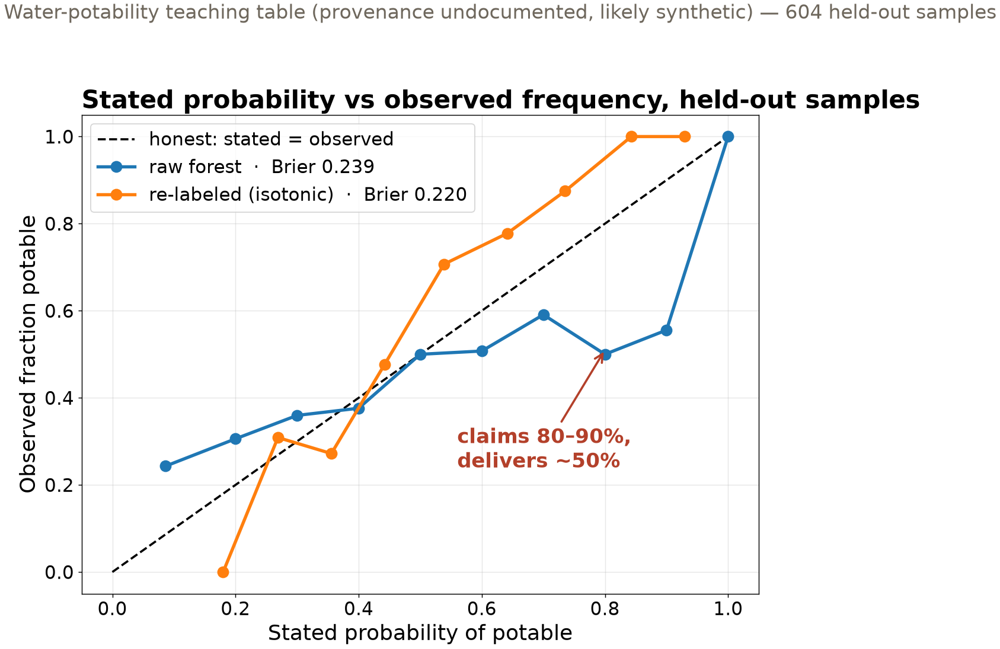

✓Geoscience invented this: weather forecasters have scored their stated probabilities against observed frequencies since 1950.
Brier, G. W. (1950). Verification of forecasts expressed in terms of probability. Monthly Weather Review, 78(1), 1–3.
📖The survey: which model families emit distorted probabilities, and which repairs fix them.
Niculescu-Mizil, A. & Caruana, R. (2005). Predicting good probabilities with supervised learning. Proceedings of the 22nd International Conference on Machine Learning (ICML), 625–632.
✗Modern deep networks got more accurate and less calibrated — confident probabilities that don’t mean what they say.
Guo, C., Pleiss, G., Sun, Y., & Weinberger, K. Q. (2017). On calibration of modern neural networks. Proceedings of the 34th International Conference on Machine Learning, PMLR 70, 1321–1330.
📖The goal, stated cleanly: maximize sharpness subject to calibration — the standard for any probabilistic forecast.
Gneiting, T., Balabdaoui, F., & Raftery, A. E. (2007). Probabilistic forecasts, calibration and sharpness. Journal of the Royal Statistical Society: Series B, 69(2), 243–268.
The field is actively writing this story — new papers land monthly. These four anchor today’s ideas.
The one lesson where we open the box
A weighted sum of the features: one score per data sample
A squash to probability: large score → near 1, small → near 0
A loss that punishes confident errors: wrong at 99% costs far more than wrong at 55%
Follow the slope downhill: nudge every weight against its gradient, repeat
Every neural network in Chapter 4 is this loop, stacked. See it once with nothing hidden.
An honest near-null result
0.597 always predict “not potable” — the trivial baseline
0.598 logistic regression, held-out accuracy
Water-potability teaching table: 9 chemistry features, 2011 samples. Provenance undocumented, likely synthetic — a classroom table, not a water study.
Nine features, combined linearly, carry almost no signal — and the model says so. That honesty is worth more than an inflated score.
Calibrated, defined
A model is calibrated when its stated probabilities match observed frequencies: of all samples given “70%”, about 70% come true
Reliability diagram: stated probability (x) vs observed frequency (y) — honest models track the diagonal
Brier score: mean squared error of the probability. A wrong 0.99 costs three times a wrong 0.55
Accuracy only sees which side of 50% you were on. The Brier score reads the number itself.
A confident competitor, repaired

The overfit forest beats logistic on accuracy (0.62 vs 0.60) — and lies exactly where a user would act. Re-labeling repairs it: Brier 0.239 → 0.220.
The probability is the deliverable
A geotechnical engineer reports probability of liquefaction → enters a building-code check
A water manager acts on probability of a harmful algal bloom
A floodplain map encodes probability of flood exceedance
The threshold owner is not the model trainer — they take your number at face value.
A miscalibrated 90% that means 55% silently moves your modeling error into someone else’s decision.
What we built today
Tool
The question it answers
Today’s answer
Baseline + held-out score
is there signal at all
0.598 vs 0.597 floor — barely
Gradient descent + autodiff
how every model in Ch. 4 learns
loss falls, gradients match calculus
Reliability diagram
does stated 80% happen 80% of the time
forest: no — delivers ~50%
Brier score + re-labeling
how wrong, and can it be repaired
0.239 → 0.220, ranking preserved
Two honest deliverables: a probability that means what it says, and a report that shows you checked.
Now run it yourself — open 3.6
pixi run jupyter lab → 3.6_logistic_regression.ipynb
Verify autodiff: run the one-observation cells — PyTorch’s gradients vs your calculus
Train the loop (torch.optim.SGD), then score: baseline, train, test
Calibrate: reliability diagrams and Brier scores; repair the forest with CalibratedClassifierCV(method='isotonic')
HW-CML assigned today, due Fri Nov 20 · Fri: trees, forests, ensembles (3.7 + 3.9) · leaderboard open through Nov 24